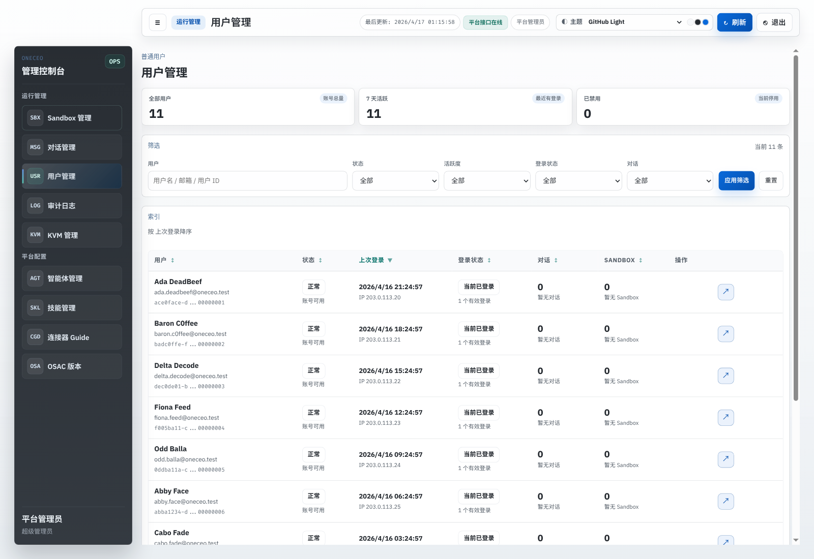
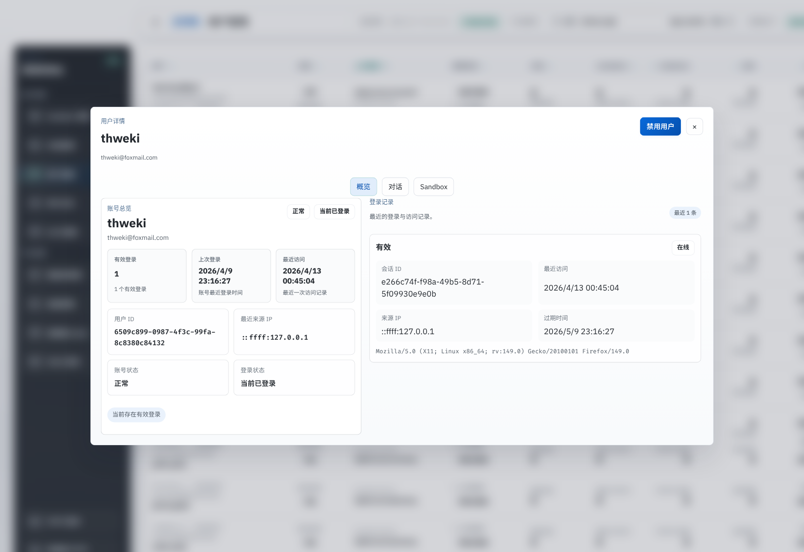
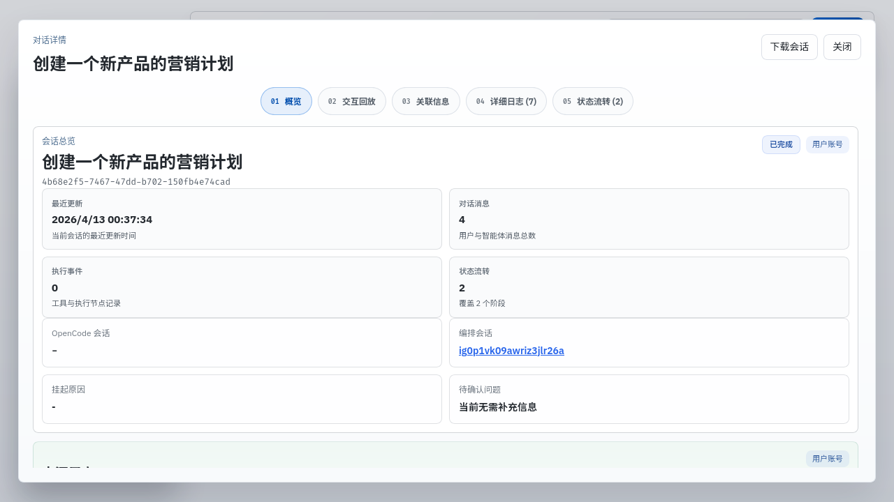
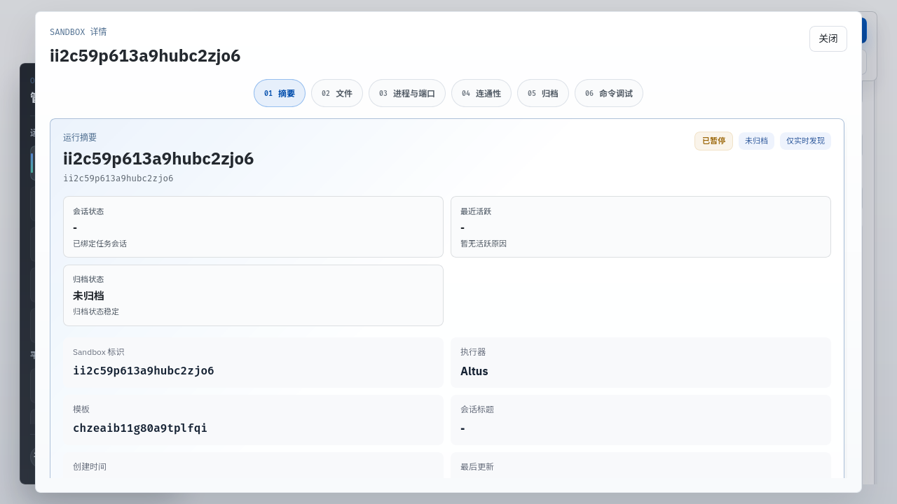
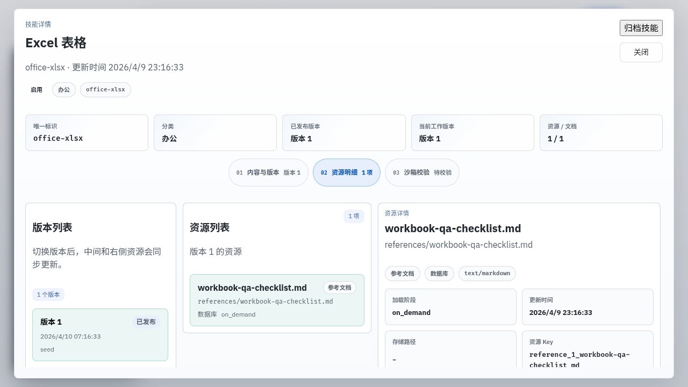
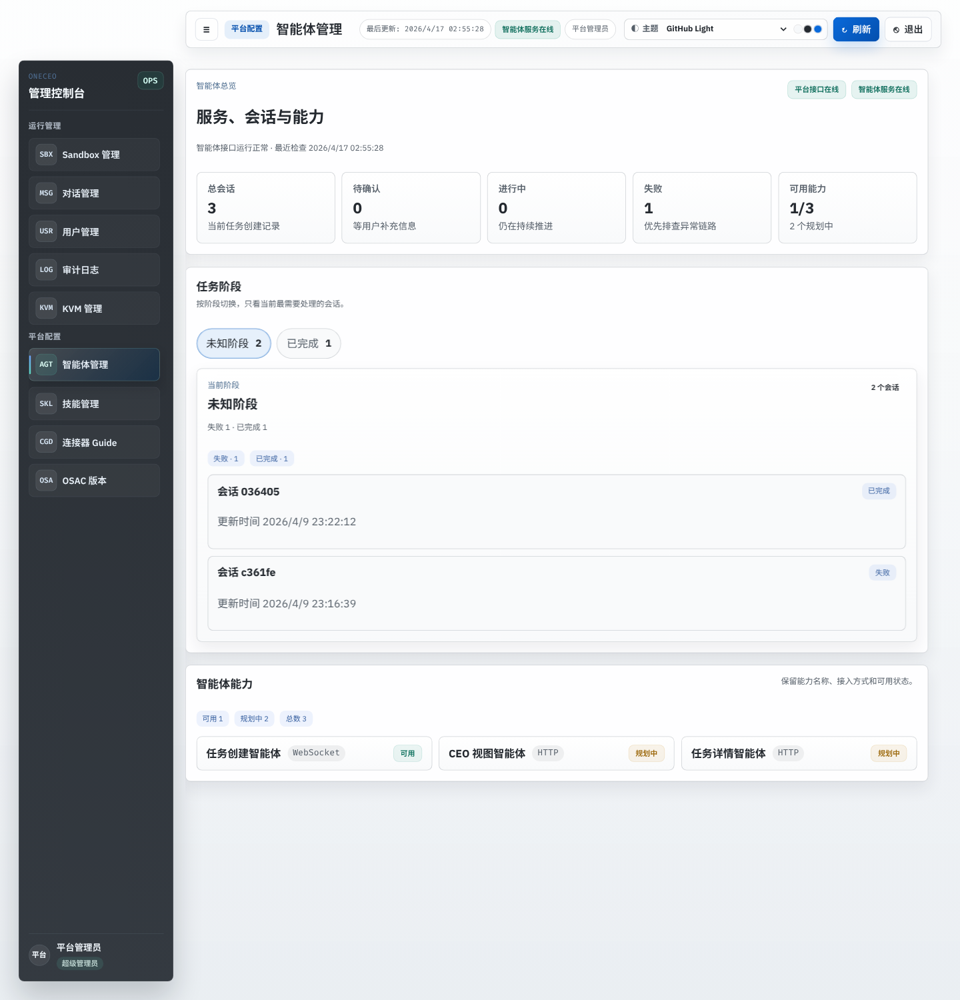
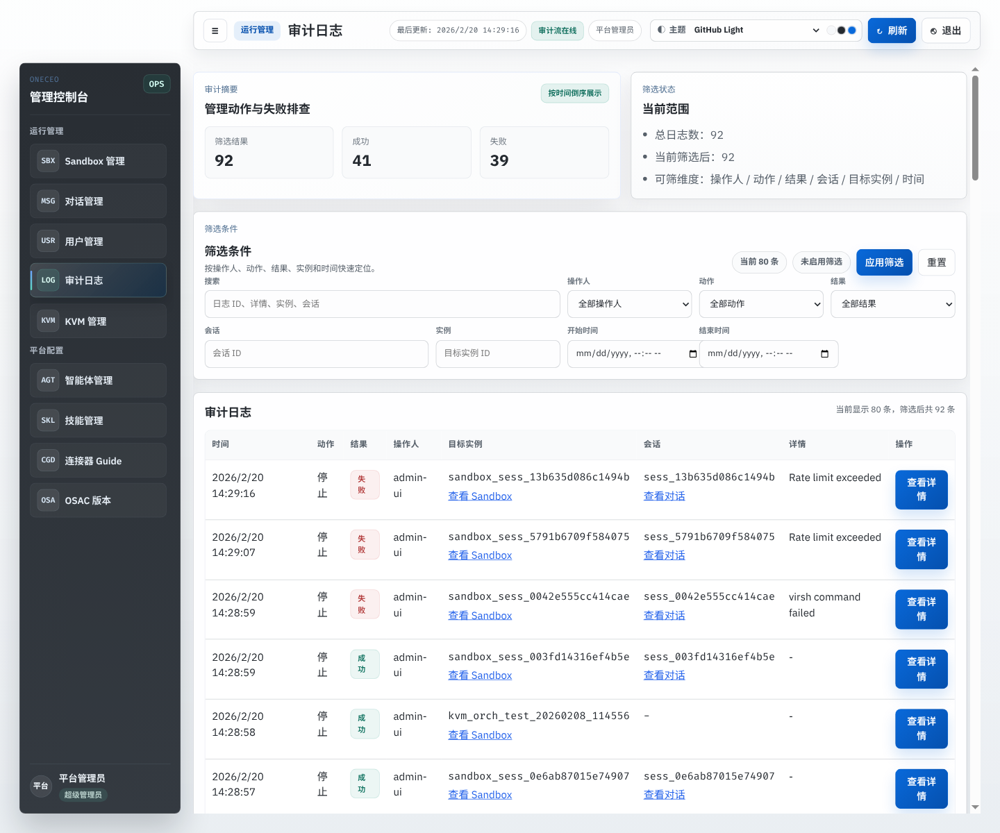
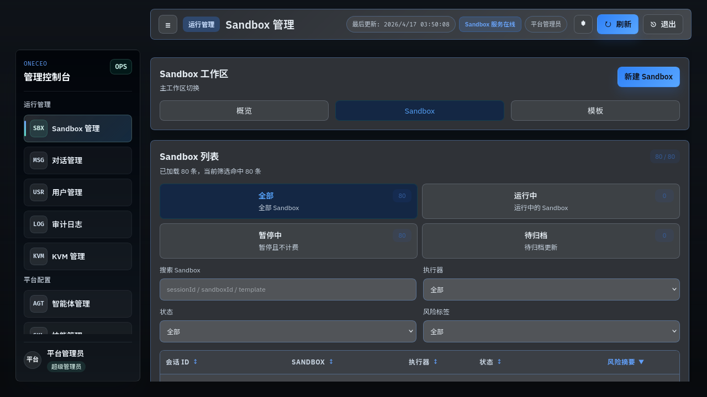
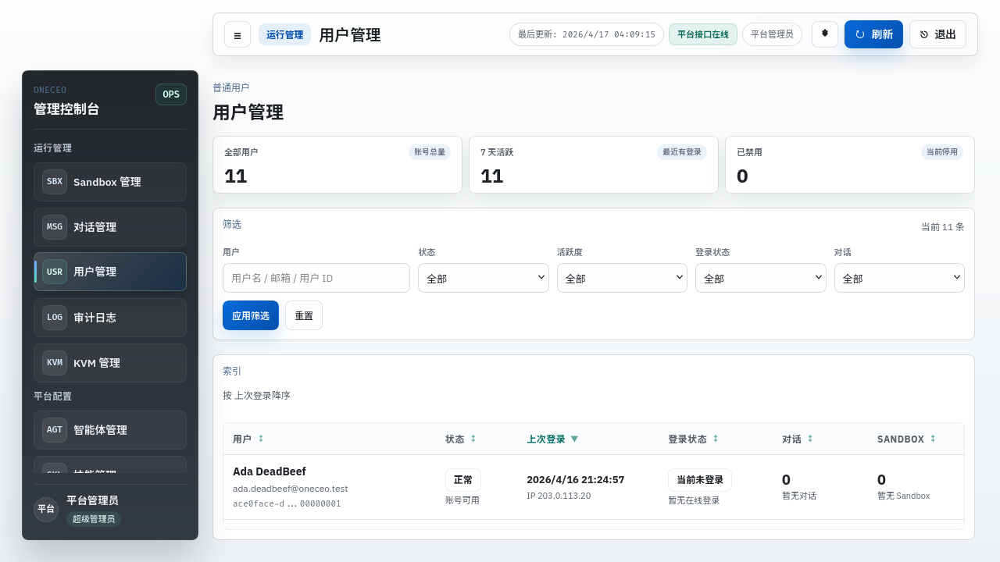
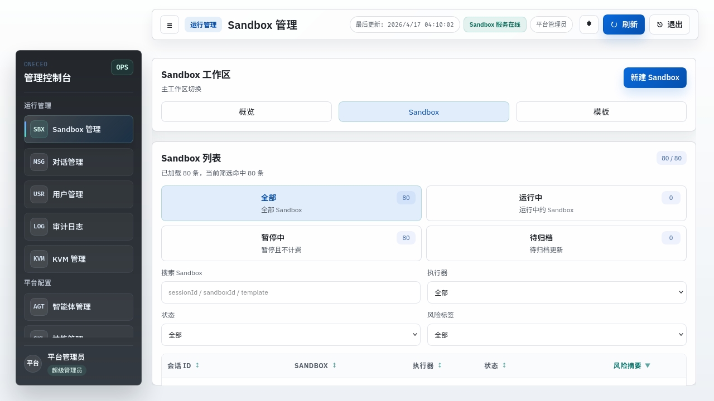

ONECEO / ADMIN MANAGEMENT
2026-04-17 管理后台夜间迭代报告
这一晚主要把管理后台收成更稳、更顺手的一版：用户管理、对话管理、Sandbox、技能管理、OSAC、主题设置和详情弹层都做了减法，
同时补上了登录状态口径、Sandbox 归档/连通性回退、固定首屏与列表内滚动这些容易在真实值守里踩坑的地方。
用户管理重构
Sandbox 详情重排
主题系统收口
固定视口与内滚动
回归测试已补
今晚做了什么
- 把用户管理改成 AWS 风格的索引表 + 顶部筛选 + 居中浮层详情，去掉重复按钮和不说人话的字段。
- 把“登录状态”从“cookie 还没过期”改成“当前是否在线”，避免后台全部显示成已登录。
- 收紧对话管理、技能管理、审计日志、智能体管理和 OSAC 页面，把首屏信息密度压回可读范围。
- 整理 Sandbox 详情，把文件管理、进程/端口、归档、连通性拆成更符合使用习惯的层级，并修掉 live metadata 回退故障。
- 主题设置收口为
GitHub / Nord / Rose Pine 三套主题，叠加 亮色 / 暗色 / 跟随系统 三种模式。
- 把列表页改成“上方摘要固定，列表区域单独滚动”，保证值守时始终是一个屏幕，不会整页乱跑。
今晚额外补掉的风险
- 修正 Sandbox 恢复接口的请求体双重 JSON 编码，避免恢复时读不到
snapshotKey。
- 把用户禁用与会话回收放回同一事务里，避免“账号已禁用但会话还活着”的半成品状态。
- 去掉用户详情首次打开时的重复请求，避免慢网下出现假错误提示。
- 给技能管理和 OSAC 的“刷新”动作补上失败兜底，失败时能稳定回到统一报错链路。
- 补了管理后台连接器测试、用户状态事务测试、Sandbox 回归测试和固定视口后的前端类型检查 / 构建验证。
关键截图

用户管理首屏改成更轻的摘要条、筛选栏和索引表，首屏信息顺序更接近 AWS 控制台。

用户详情概览把账号信息、登录情况和最近记录收成同一视线区域，不再分散在多个卡片里。

对话详情改成更紧凑的概览头 + 事实区结构，减少字段噪音，点开就能看见关键信息。

Sandbox 概览统一为治理向布局，关键状态、标识、时间线和操作区之间的层次更清楚。

技能管理二级菜单重排后，把资源、版本和编辑的切换关系收得更顺，少走弯路。

智能体管理砍掉重复 KPI 和装饰性信息，首屏只留总览、阶段和能力三段。

审计日志筛选区缩成工具条式布局，首屏让位给真正需要先看的摘要和结果。

设置弹层新增主题和外观模式，GitHub / Nord / Rose Pine 三套主题统一走可读性校验后的配色。

列表页改成固定首屏，外层不滚，索引表自身滚动，顶部摘要和筛选始终留在视野里。

Sandbox 页面也同步改成固定首屏 + 内部滚动，值守时不会因为长列表把整页拖乱。
验证结果
apps/admin_management：npm run type-check 通过。apps/admin_management：npm run build 通过。apps/admin_management：npx tsx --test tests/*.test.ts 通过。apps/api：用户状态、Sandbox 路由、归档服务相关测试通过。api workspace：先构建 @oneceo/shared 后，type-check 与 build 通过。git diff --check 通过，没有残留冲突标记和空白错误。
提交说明
这次提交会把后台 UI 收口、用户管理状态修正、Sandbox 链路修补、主题设置收口、固定视口滚动规则、回归测试和今晚的汇报文档一起带上。
Playwright 调试缓存不会进仓库，只保留真正有交付意义的截图。